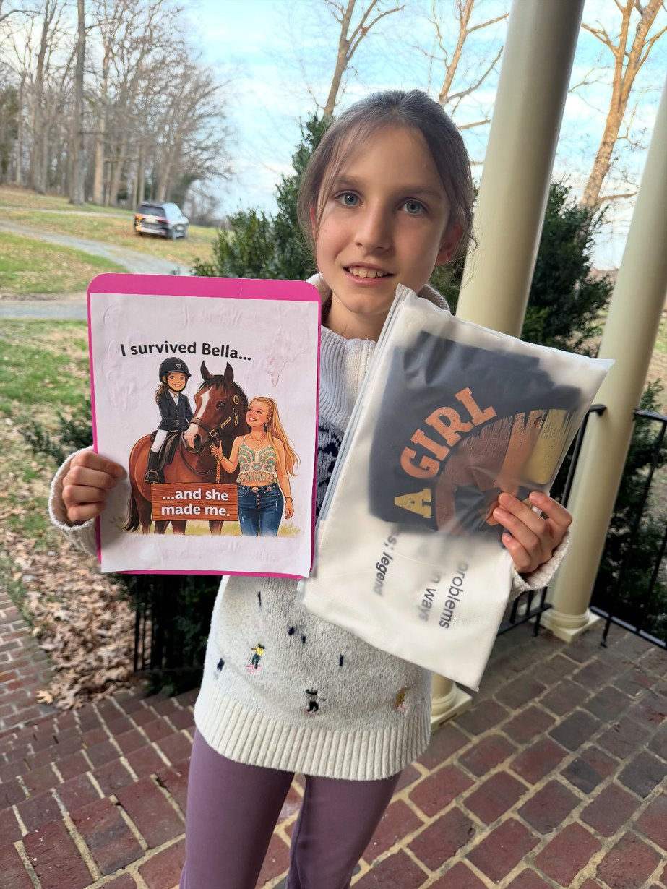

About Charlotte
Hi, I’m Charlotte. I love animals and I love asking questions.

People who care for animals
I want to meet veterinarians, trainers, and other animal experts. I hope to learn what their days are like and how they help the animals we care about. The first trainer in these stories is Martha Wunder.
The first stories
They are still coming together. There is not a recording to play yet. They follow horses at the barn, including my conversation with Martha and a visit to check on Crispy; a baby elephant I went to see at the National Zoo; and three puppies at home.
The Lemonade Society
I am also a co-founder and mini co-CEO of The Lemonade Society, with Hendrik, in the Washington, DC area. It is part of The LiTEArary Society, Inc. Its mission supports a lifelong love of books among preschool-aged children in disadvantaged communities. A parent or caregiver supervises every meeting.
The stories are the best place to start.